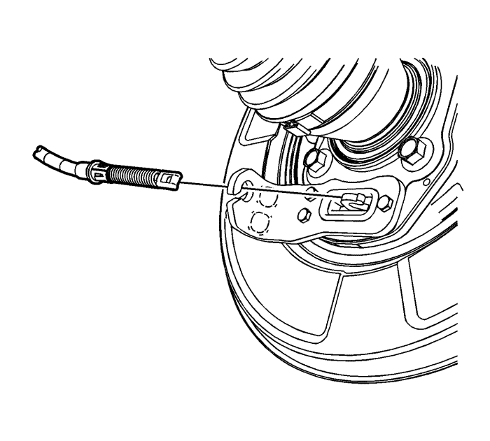
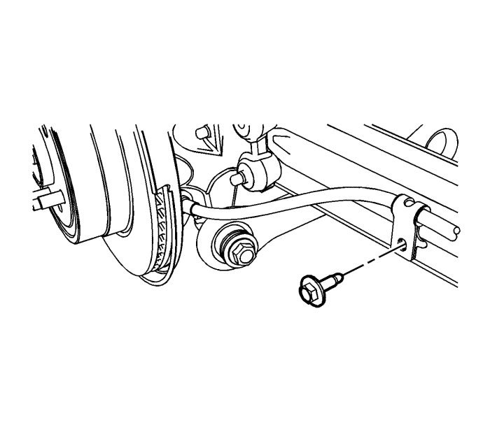
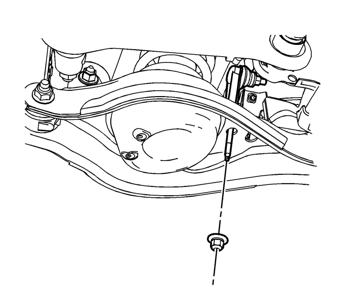
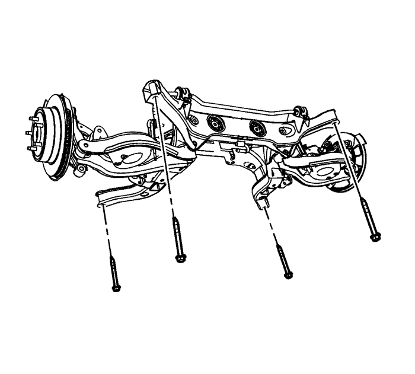

Sustitución del soporte -- AWD
Herramientas especiales
J-37043 Herramienta de desbloqueo del cable del freno de mano
Procedimiento de desmontaje
- Coloque la palanca del freno de mano en posición de desbloqueo.
- Elevar el vehículo y soportarlo de manera segura. Consultar Elevación del vehículo con un gato .
- Desmonte los neumáticos y ruedas. Consultar Desmontaje y montaje de la rueda y el neumático .
- Retire el silenciador de escape. Consultar Sustitución del silenciador de escape : NB5 .

- Desconecte los cables del freno de mano trasero de los actuadores del freno de mano.
- Con la herramienta de desbloqueo J-37043, desconecte los cables del freno de mano de los soportes de montaje.
- Ponga a un lado los cables del freno de mano traseros.
- Desemborne los conectores eléctricos del sensor de velocidad de la rueda trasera y los clips de canalización del soporte trasero y los brazos de apoyo superiores.
Ponga a un lado el mazo de cables.
- Extraiga el perno y la tuerca del soporte del latiguillo de freno trasero.
Atención: Sujete las pinzas de freno con alambre mecánico fuerte o equivalente cuando se separen del montaje y aún esté conectado el tubo flexible de freno hidráulico. Si no se sujetan las pinzas de esta manera, el tubo flexible de freno tendrá que soportar el peso de las pinzas, lo que puede provocar que se dañe el tubo flexible de freno y esto, a su vez, puede provocar una fuga de líquido de frenos.
- Extraiga las pinzas de freno y los soportes como conjuntos y aguántelos mediante cables mecánicos gruesos o equivalente. Consultar Sustitución del soporte de la pinza del freno trasero .

- Extraiga los pernos de canalización del cable del freno de mano trasero de los brazos de remolque.

- Mientras aguanta la articulación del estabilizador con una llave, extraiga la tuerca de la articulación del estabilizador al brazo de apoyo inferior.
- Retire los brazos de remolque. Consultar Sustitución de brazo de remolque .
- Extraiga las articulaciones de ajuste. Consultar Sustitución de la articulación de la suspensión trasera - articulación de la convergencia .
- Retire los árboles impulsores de la rueda trasera. Consultar Sustitución del árbol impulsor de la rueda trasera .
- Retire el diferencial trasero. Consultar Sustitución del diferencial .
- Coloque un gato para el cambio debajo del soporte trasero y fije firmemente el soporte al gato con correas.

- Extraiga los 4 pernos del soporte trasero a la carrocería.
- Retire del vehículo el conjunto del soporte trasero.
- Con un ayudante, retire el soporte trasero del gato para el cambio y colóquelo en el suelo.
Procedimiento de montaje
Precaución: Consulte Precaución con las fijaciones en la sección Prólogo
- Si se monta un nuevo soporte, será necesaria la transferencia de componentes.
| • | Brazos de apoyo superiores |
| | Apriete la tuerca y el perno del brazo de apoyo superior al soporte trasero a 160 N·m (118 lib. pie). |
| • | Brazos de apoyo inferiores |
| | Apriete la tuerca y el perno del brazo de apoyo inferior al soporte trasero a 110 N·m (81 lib. pie). |
| • | Barra estabilizadora y aislantes |
| | Apriete los pernos de la abrazadera del aislante del eje estabilizador a 70 N·m (52 lib. pie). |
| | Apriete la articulación del estabilizador en la tuerca del eje estabilizador a 57 N·m (42 lib. pie). |
| • | Manguetas - Coloque sin apretar los pernos/tuercas del brazo de apoyo inferior y superior a la mangueta. Esos fijadores se apretarán más adelante en este procedimiento, una vez montados los ejes propulsores de la rueda. |
- Con un ayudante, coloque el soporte trasero en el gato para el cambio y fije firmemente el soporte al gato con correas.
- Coloque en el vehículo el conjunto del soporte trasero.
- Monte los 4 pernos del soporte trasero a la carrocería y apriételos a 170 N·m (125 lib. pie).
- Monte el diferencial trasero. Consultar Sustitución del diferencial .
- Monte los árboles impulsores de la rueda trasera. Consultar Sustitución del árbol impulsor de la rueda trasera .
- Monte las articulaciones de ajuste. Consultar Sustitución de la articulación de la suspensión trasera - articulación de la convergencia .
- Monte los brazos de remolque. Consultar Sustitución de brazo de remolque .
- Mientras aguanta la articulación del estabilizador, monte la tuerca de la articulación del estabilizador al brazo de apoyo inferior y apriete a 15 N·m (11 lib. pie).
Atención: Sujete las pinzas de freno con alambre mecánico fuerte o equivalente cuando se separen del montaje y aún esté conectado el tubo flexible de freno hidráulico. Si no se sujetan las pinzas de esta manera, el tubo flexible de freno tendrá que soportar el peso de las pinzas, lo que puede provocar que se dañe el tubo flexible de freno y esto, a su vez, puede provocar una fuga de líquido de frenos.
- Extraiga el cable de apoyo y coloque los conjuntos de la pinza del freno y del soporte de vuelta encima de las manguetas. Consultar Sustitución del soporte de la pinza del freno trasero .
- Monte la tuerca y el perno del soporte del latiguillo de freno trasero y apriételos a 12 N·m (106 lib. pulg.).
- Coloque el mazo de cables a su ubicación original, conecte los clips de canalización al soporte trasero y a los brazos de apoyo superiores.
Conecte los conectores eléctricos del sensor de velocidad de la rueda trasera.
- Conecte los cables del freno de mano trasero a través de los soportes de montaje y encima de los actuadores del freno de mano.
- Monte los pernos de canalización del cable del freno de mano trasero en los brazos de remolque y apriete los pernos a 12 N·m (106 lib. pulg.).
- Monte el silenciador de escape. Consultar Sustitución del silenciador de escape : NB5 .
- Monte los neumáticos y ruedas. Consultar Desmontaje y montaje de la rueda y el neumático .
- Compruebe la alineación trasera. Consultar Medición de la alineación de las ruedas .
| © Copyright Chevrolet Europe. All rights reserved |